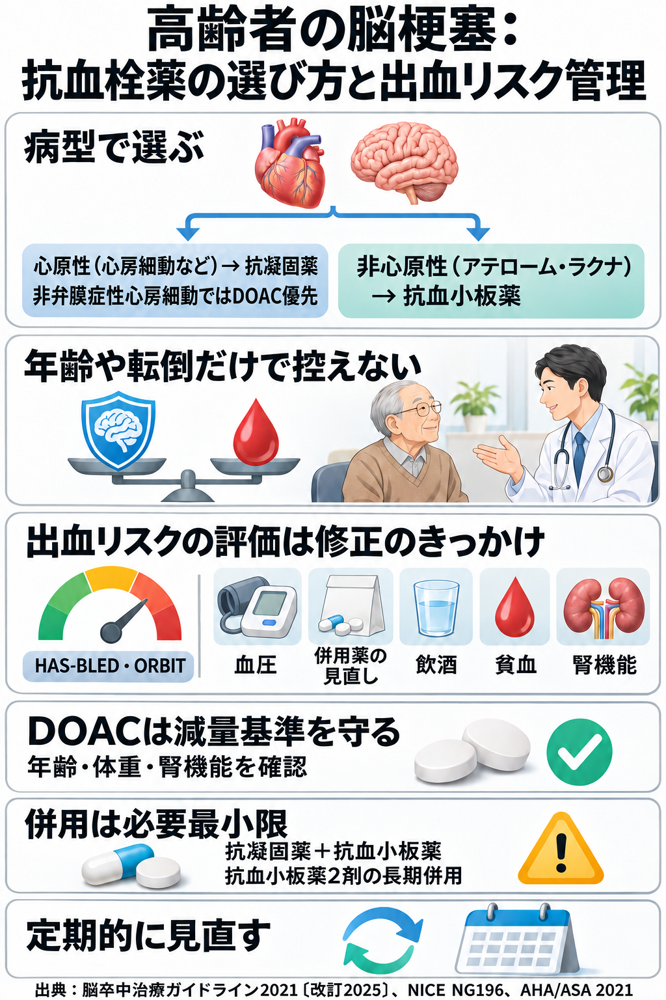

高齢者の脳梗塞：抗血栓薬の選び方と出血リスク管理
高齢発症の脳梗塞で、病型に応じた抗血栓薬の選び方と、出血リスクを評価して修正しながら治療を続ける考え方を1枚にまとめた図です。
画像をクリック／タップすると原寸で表示します。

図の要点
- 病型で選ぶ：心原性脳塞栓症には抗凝固薬（非弁膜症性心房細動ではDOACを優先）、非心原性脳梗塞には抗血小板薬が基本です。
- 年齢や転倒だけで控えない：英国NICEのガイドラインは、年齢や転倒リスクだけを理由に抗凝固療法を控えないよう勧告しています。
- 出血リスクの評価は修正のきっかけ：高血圧、併用薬、飲酒、貧血などの修正できる要因に手を打ち、DOACは減量基準を守って使います。
出典と注意
日本脳卒中学会『脳卒中治療ガイドライン2021〔改訂2025〕』、NICE NG196（2021）、AHA/ASA 2021年脳卒中二次予防ガイドライン、各DOACの電子添文に基づいて作成。一般的な医学情報であり、個々の治療方針は主治医と相談してください。